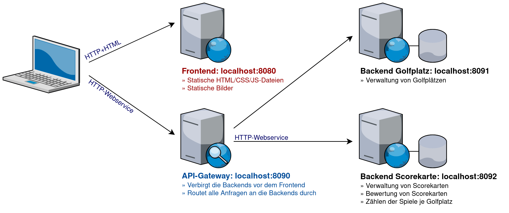
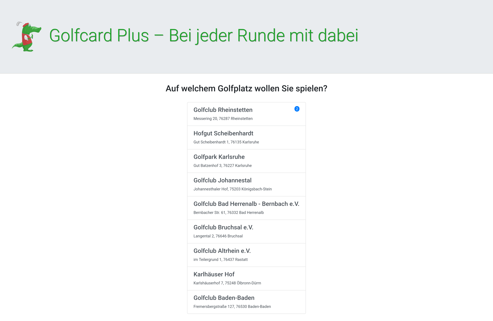
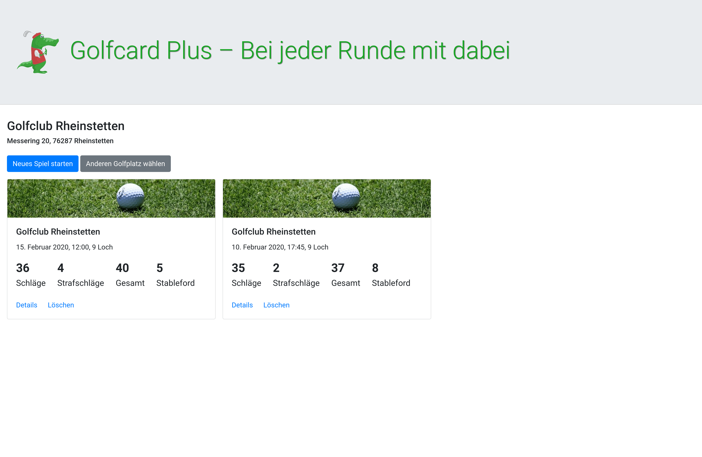
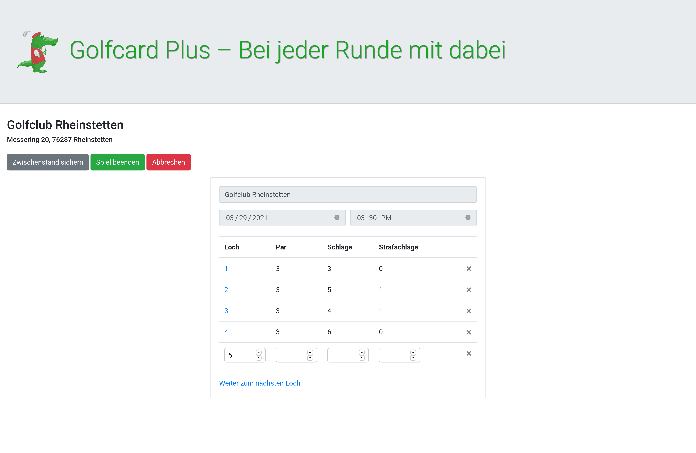
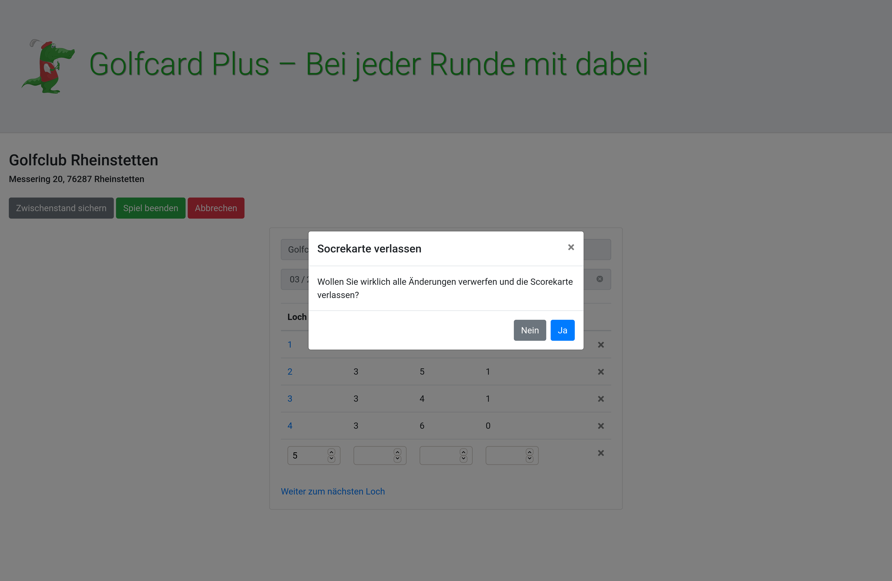

Im Kapitel über die REST API-Entwicklung haben wir die Anwendung „Golfcard” kennengelernt. Sie diente als Beispiel für eine moderne Webanwendung mit einer Single Page App als Frontend und einer mit REST-Webservices angesprochenen Spring-Anwendung als Backend. In dieser Aufgabe soll die App nun wieder als Beispiel herhalten, dieses mal aber in einer erweiterten Version bestehend aus dem Frontend, einem Backend zur Verwaltung von Golfplätzen, einem Backend zur Verwaltung der Scorekarten sowie einem API-Gateway:
|  |  |
|  |  |
In dieser Aufgabe soll es darum gehen, die Anwendungskomponenten durch einen Nameserver voneinander zu entkoppeln sowie den laufenden Betrieb aller Komponenten in einem Admin-Dashboard zu überwachen.
Deine erste Aufgabe ist ganz einfach. Lade die Quellcodes auf deinen Rechner und versuche, die Anwendung zum Laufen zu bringen. Hierzu musst du einfach nur die einzelnen Services in folgender Reihenfolge starten. Dabei kannst du die noch fehlenden Services zunächst ignorieren.
| Nr. | Service | Webadresse | Hinweise |
|---|---|---|---|
| 1 | Admin-Server | http://localhost:8888/ | Fehlt anfangs noch |
| 2 | Nameserver | http://localhost:8761/ | Fehlt anfangs noch |
| 3 | API-Gateway | http://localhost:8090/ | |
| 4 | Backend Golfplatz | http://localhost:8091/api/ | |
| 5 | Backend Scorekarte | http://localhost:8092/api/ | |
| 6 | Frontend | http://localhost:8080/ |
Funktional ist die Anwendung bereits fertig programmiert. Sie sollte sich daher wie in den Screenshots oben dargestellt (hoffentlich) fehlerfrei verhalten. 🙂
Nachdem die Anwendung nun läuft, wollen wir ihren Betrieb mit einem Admin-Dashboard überwachen. Dieses soll anzeigen, ob alle Bestandteile fehlerfrei laufen und sowie verschiedene Informationen zur Fehlersuche im laufenden Betrieb anbieten. Die Anwendung soll daher um den in der Vorlesung vorgestellten „Spring Boot Admin Server” erweitert werden. Hierfür kannst du wie folgt vorgehen:
Erstelle auf start.spring.io ein neues Projekt mit folgenden Parametern:
Übernehme folgenden Inhalt für die Datei application.properties:
spring.application.name = GCPLUS-ADMIN
# Admin Standardport: 8888
server.port = 8888
# Wirklich alle Monitoringendpunkte aktivieren
management.endpoints.web.exposure.include = *
Kommentiere in der pom.xml der anderen Komponenten die Abhängigkeit spring-boot-admin-starter-client ein und kompiliere die Komponenten erneut (Funktion „Clean and Build” in NetBeans).
Trage in der Konfigurationsdatei aller Services die URL des Admin-Servers ein. Die hierfür notwendige Property spring.boot.admin.client.url ist bereits überall vorhanden, besitzt jedoch noch keine Ausprägung.
Stoppe alle Services und starte sie in der oben genannten Reihenfolge neu.
Im Admin-Dashboard solltest du nun beobachten können, wie die Services online gehen. Schaue dir dabei auch an, wie sich das Dashboard (z.B. in der Wallboard-Ansicht) verhält, wenn du einen Service stoppst.
In der aktuellen Version lässt sich die Anwendung zwar einem Entwickler-Laptop lokal starten. Im Produktivbetrieb ist aber problematisch, dass alle Services über localhost-Adressen direkt aufeinander verweisen. In den meisten Fällen ist bereits durch eine zweite Konfigurationsdatei namens application-cloud.properties Vorsorge getroffen, um die Adressen, die sich nicht aus dem Namensdienst auslesen lassen, später in Form von Umgebungsvariablen des Betriebssystems übergeben zu können.
Dieselbe Technik könnte im Grunde genommen zwar auch verwendet werden, um in der Konfiguration des API-Gateways die Adressen der beiden Backend-Services bekannt zu machen. Etwas schöner ist jedoch die Verwendung eines Namensdienstes, weil dadurch alle Verwender automatisch aktualisiert werden, wenn sich die Adresse eines Microservices ändert. Gehe deshalb wie folgt vor, um den in Spring mitgelieferten „Eureka“ Namensdienst zu aktivieren:
Erstelle auf start.spring.io ein neues Projekt mit folgenden Parametern:
Übernehme folgenden Inhalt für die Datei application.properties:
spring.application.name = GCPLUS-NAMESERVER
# Eureka Standardport: 8761
server.port = 8761
# Den Namensdienst selbst nicht beim Namensdienst registrieren. :-)
eureka.client.registerWithEureka = false
eureka.client.fetchRegistry = false
# Timeout-Intervall für abgestürzte Services hochsetzen, damit wir in diesem
# Minibeispiel keine falschen Alarme wegen zu wenig aktiver Services bekommen,
# wir in Wirklichkeit aber gerade mal einen Service gestartet haben.
eureka.server.eviction-interval-timer-in-ms = 10000
# Adresse des Admin-Servers
# Vgl. https://codecentric.github.io/spring-boot-admin/current/#spring-boot-admin-client
spring.boot.admin.client.url = http://localhost:8888
# Wirklich alle Monitoringendpunkte aktivieren
management.endpoints.web.exposure.include = *
# Log-Einträge auf Platte sichern, damit diese über die Monitoring Webservices
# abgerufen werden können und in der Admin-Oberfläche sichtbar sind
logging.file.name = ${user.home}/gcplus-nameserver.log
Kommentiere in der pom.xml der anderen Komponenten die Abhängigkeit spring-cloud-starter-netflix-eureka-client ein und kompiliere die Komponenten erneut (Funktion „Clean and Build” in NetBeans).
Trage in der Konfigurationsdatei aller Services die URL des Namensservers ein. Die hierfür notwendige Property eureka.client.serviceUrl.defaultZone ist bereits überall vorhanden, besitzt jedoch noch keine Ausprägung.
Passe die Konfiguration des API-Gateways so an, dass in die Zieladressen der beiden Backend-Services in den Routingregeln nicht mehr hart-codiert hinterlegt sind, sondern aus dem Namensdienst gezogen werden.
Kommentiere zusätzlich im Frontend den gekennzeichneten Quellcode in der Klasse GetGatewayUrlController wieder ein und tausche Adresse in der Property gcplus.gateway gegen dan logischen Namen des API-Gateways aus.
Stoppe alle Services und starte sie in der oben genannten Reihenfolge neu.
Daumen drücken! Wenn alles gut läuft, sollte die Anwendung weiterhin fehlerfrei funktionieren. In der Weboberfläche des Namensdienstes kann aber sehen, welche Services sind bei ihm registriert haben.